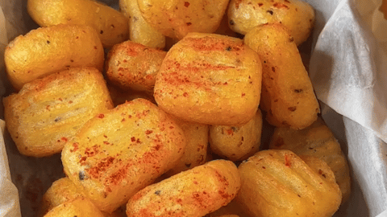

- 2 large potatoes (300g)
- 2 tbsp glutinous rice flour (all purpose flour also works)
- 1 tbsp cornstarch/ potato starch
- 1/3 tsp salt
- 1/3 tsp pepper
- 4 cups cooking oil
- 1 tsp chili powder (optional)
- Peel potatoes, wash them, then cut into small chunks.
- Boil potatoes for 20 minutes or until soft.
- Mash the potatoes using a fork then mix with glutinous rice flour, cornstarch, salt, and black pepper.
- Knead the mashed potatoes into a dough then separate into two portions.
- Roll the dough into logs and cut into about one inch pieces. Using a fork, press on top of the dough pieces to make a gnocchi-like pattern.
- Heat up the cooking oil in a pot over medium heat for 5 minutes. Deep fry the potato pieces until they turn light golden then take out of the pot.
- Heat up the oil over high heat for 3 minutes. Deep fry the potato pieces again for another 30 seconds then remove from pot.
- Serve and enjoy the potato pillows by themselves or with chili powder or ketchup.